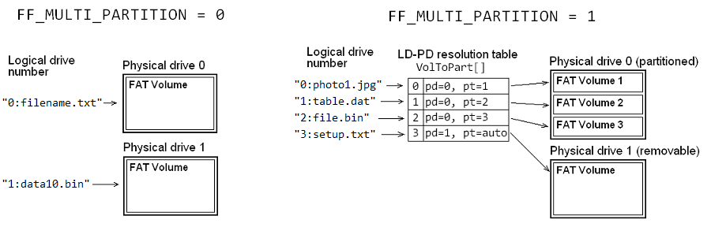

The format of path name on the FatFs module is similer to the filename specs of DOS/Windos as follows:
[drive#:][/]directory/file
The FatFs module supports long file name (LFN) and 8.3 format file name (SFN). The LFN can be used when FF_USE_LFN >= 1. The sub-directories are separated with a \ or / as the same way as DOS/Windows API. Duplicated separator and terminating separator, such as "//animal///cat/", are ignored. Only a difference is that the heading drive prefix to specify the logical drive, an FAT volume, is in a digit (0-9) + a colon, while it is in an alphabet (A-Z) + a colon in DOS/Windows. The logical drive number is the identifier to specify the volume to be accessed. When drive prefix is omitted, the logical drive number is assumed as default drive.
Control characters (\0 to \x1F) are recognized as end of the path name. In LFN configuration, leading or embedded white spaces in the file name are valid as part of the file name, but the treminating white space and dot of the file name are ignored and truncated. In non-LFN configuration, white space is recognized as end of the path name.
In default configuration (FF_FS_RPATH == 0), it does not have a concept of current directory like OS oriented filesystem. Every object on the volume is always specified in full path name followed from the root directory. Dot directory names (".", "..") are not allowed. Heading separator is ignored and it can be exist or omitted. The default drive is fixed to drive 0.
When relative path feature is enabled (FF_FS_RPATH >= 1), specified path is followed from the root directory if a heading separator is exist. If not, it is followed from the current directory of the default drive. Dot directory name is also allowed for the path name. The current directory is set by f_chdir function and the default drive is the current drive set by f_chdrive function.
| Path name | FF_FS_RPATH == 0 | FF_FS_RPATH >= 1 |
| file.txt | A file in the root directory of the drive 0 | A file in the current directory of the current drive |
| /file.txt | A file in the root directory of the drive 0 | A file in the root directory of the current drive |
| The root directory of the drive 0 | The current directory of the current drive | |
| / | The root directory of the drive 0 | The root directory of the current drive |
| 2: | The root directory of the drive 2 | The current directory of the drive 2 |
| 2:/ | The root directory of the drive 2 | The root directory of the drive 2 |
| 2:file.txt | A file in the root directory of the drive 2 | A file in the current directory of the drive 2 |
| ../file.txt | Invalid name | A file in the parent directory |
| . | Invalid name | This directory |
| .. | Invalid name | Parent directory of the current directory (*) |
| dir1/.. | Invalid name | The current directory |
| /.. | Invalid name | The root directory (sticks the top level) |
Also the drive prefix can be in pre-defined arbitrary string. When the option FF_STR_VOLUME_ID == 1, also arbitrary string volume ID can be used as drive prefix. e.g. "flash:file1.txt", "ram:temp.dat" or "sd:". If the srting does not match any volume ID, the function fails with FR_INVALID_DRIVE.
When FF_STR_VOLUME_ID == 2, Unix style drive prefix can be used. e.g. "/flash/file1.txt", "/ram/temp.dat" or "/sd". If a heading separator is exist, it is treated as start of drive prefix and in absolute path. Any form as "root directory in current drive" and "current directory in specified drive" cannot be used. Double dot name cannot traverse the drives such as "/flash/../ram/foo.dat".
Remark: In this revision, double dot name ".." cannot follow the parent directory on the exFAT volume. It will work as "." and stay there.
In the generic FAT filesystems, the legal characters for object name (file/directory name) are, 0-9 A-Z ! # $ % & ' ( ) - @ ^ _ ` { } ~ in ASCII and extended characters \x80 to \xFF. In the FAT filesystems with LFN extention, also + , ; = [ ], white space and extended characters U+000080 to U+10FFFF are legal for the object name. White spaces and dots can be placed anywhere in the path name except end of the name. Trailing white spaces and dots are ignored.
FAT filesystem is case-insensitive to the object names on the volume. Object name on the FAT volume is compared in case-insensitive. For instance, these three names, file.txt, File.Txt and FILE.TXT, are identical on the FAT filesystem. This is applied to extended charactres as well. When an object is created on the FAT volume, up converted name is recorded to the SFN entry, and the raw name is recorded to the LFN entry when LFN extension is exist.
As for the MS-DOS and PC DOS for CJK (DOS/DBCS), extended characters ware recorded to the SFN entry without up-case conversion and compared in case-sensitive. This causes a problem on compatibility with Windows system when the object with extended characters is created on the volume by DOS/DBCS system; therfore the object names with DBCS extended characters should not be used on the FAT volume shared by those systems. FatFs works with case-sensitive to the extended characters in only non-LFN with DBCS configuration (DOS/DBCS specs). However, FatFs works with case-insensitive to the extended character (WindowsNT specs) in LFN configuration.
The path names are input/output in either ANSI/OEM code or Unicode depends on the configuration options. The type of arguments which specifies the path names is defined as TCHAR. It is an alias of char by default and the code set used for the path name string is ANSI/OEM specifid by FF_CODE_PAGE. When FF_LFN_UNICODE is set to 1 or larger, the type of the TCHAR is switched to proper type to support the Unicode string. When Unicode API is specified by this option, the full-featured LFN specification is supported and the Unicode specific characters, such as ✝☪✡☸☭ and any character not in BMP, can also be used for the path name. It also affects data types and encoding of the string I/O functions. To define literal strings, _T(s) and _TEXT(s) macro are available to specify the string in proper type. The code shown below is an example to define the literal strings.
f_open(fp, "filename.txt", FA_READ); /* ANSI/OEM string (char) */ f_open(fp, L"filename.txt", FA_READ); /* UTF-16 string (WCHAR) */ f_open(fp, u8"filename.txt", FA_READ); /* UTF-8 string (char) */ f_open(fp, U"filename.txt", FA_READ); /* UTF-32 string (DWORD) */ f_open(fp, _T("filename.txt"), FA_READ); /* Changed by configuration (TCHAR) */
By default, each logical drive is associated with the physical drive in same drive number. An FAT volume on the physical drive is serched in the volume mount process. It reads boot sectors and checks it if it is an FAT VBR in order of LBA 0 as SFD format, 1st partition, 2nd partition, 3rd partition, ..., as MBR or GPT format.
When multiple partition feature is enabled, FF_MULTI_PARTITION = 1, each individual logical drive is associated with arbitrary partition or physical drive specified by volume management table, VolToPart[]. The table needs to be defined by user to resolve mappings of the logical drive numbers and the associated partitions or drives. Following code is an example of the volume management table.
Example: "0:", "1:" and "2:" are associated with three partitions on the physical drive 0 (a non-removable drive)
"3:" is associated with physical drive 1 (a removable drive)
PARTITION VolToPart[FF_VOLUMES] = {
{0, 1}, /* "0:" ==> 1st partition on the pd#0 */
{0, 2}, /* "1:" ==> 2nd partition on the pd#0 */
{0, 3}, /* "2:" ==> 3rd partition on the pd#0 */
{1, 0} /* "3:" ==> pd#1 as removable drive (auto-search) */
};

There are some considerations when enable the multi-partition configuration.